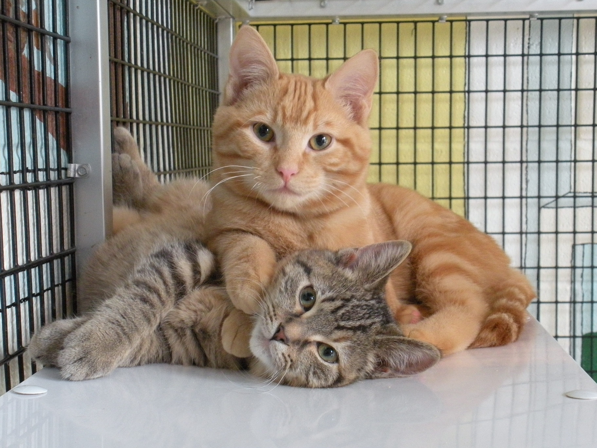

What does being a cat foster mean?
-
- Helping to reintroduce your foster cat to a home environment by giving them some basic training in socialization, exercise, and lots of love.
-
- Providing your foster cat food, liter, and vet visits in your time as well with your own money
-
- Evaluate your foster cat's personality and provide recommendations for ideal permanent home environment
-
- Communicate regularly with the cat coordinator regarding any changes to animal health, behavioral issues, etc
If you're interested, book an appointment. Reviewing over responsibilites of being a foster and paperworks will be done within the time period of the appointment.
